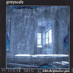

Home Artist links Label link

Grayscale - When The Ghost Are Gone
| Artist: | Grayscale |
| Title: | When The Ghost Are Gone |
| Label: | Sound Riot SRP.16 |
| Length(s): | 37 minutes |
| Year(s) of release: | 2002 |
| Month of review: | [02/2003] |
Sample this album in MP3 or RealAudio
The music
Six Fins strong, Grayscale delivers a good, albeit somewhat short introduction
to their brand of progressive metal. On The World Today, we open with
a quiet keyboards, after which catchy and powerful guitars make a run for it.
The vocals are sung (no grunt), but sound very far away. This is intentional
as far as I can make out. This first song is very good one, catchy and
effective, like the up-tempo side of Anathema. The keyboards stand very
much on the foreground, the guitars more in the back, which is a surprising.
On A Dead Season we get more tempo, again a good piece of work. Catchiness
is an ehm catch word here, because Gray Singer keeps up the level. Maybe not
all as proggy as one would like, but it is certainly effective and appealing.
On Squeeze, the singer gets to be more aggressive, while the Fire Inside Me glides ride over into Absent. At first we have acoustic guitar ehre, which makes
one thing of a ballad, but the later parts of the song are much heavier
again. Melody continues to be important, and the overall feel also reminds
me of Opeth, maybe not at the same level of sophistication. Shape In The
Shadows is punky and simpler than the previous songs. It also has a bit of
grunt in the back (in case you are allergic).
With Cast Aside we are back to the catchy rocksongs. Anathema packs a bit
more atmosphere, and maybe the length of this album is not a bad one, because
as it happens, the variation between the songs is not so large.
The title track closes down the album acoustically. In addition to Opeth and Anathema I might also coin Paradise Lost. I really like this one, but
think that the band needs to get more varied in approach to appeal for
a longer period of time. On the other hand, I might as well conclude here
that the band knows its limits and dealt well with them.
© Jurriaan Hage